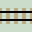
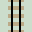

Train and Track
We've all at some time enjoyed playing with a model train layout. Straight and curved track pieces are joined together to create loops and sidings. The train is set running and enters a predetermined route, obediently following the track we've laid. Without any dead-ends, it will run around the layout forever.
Points switch the train between different sections of track. They alter the trains course and choose which route it traverses. The points act like binary switches, with two positions, 0 or 1.
This raises a few questions which these pages will answer:
1/ What is the best method for designing computational layouts? Computer programs carefully avoid complex tangles of code because it makes fault finding (debugging) tricky. Likewise, we want to avoid great layouts of tangled spaghetti.We'll solve this by building sublayouts as subroutines.
2/ Can layouts be built that actually do some kind of logical computation? They at least need to be able to count and add.
We'll construct a few compact, self contained layouts, like an Input Follower and a Random Number Generator.
3/ Can we use layouts to construct some kind of general train track computer, capable of programmable logical computation? We will need to employ a modular approach to keep designs manageable.
We'll build and program a Train Track Computer.
4/ Can we use these design techniques to create more interesting layouts? For instance, 'display' type layouts where the train completes long uninterrupted runs without human intervention.
Some 'maximum run' designs are explored as Auto Switching Layouts.
Alan TuringAlan Turing, the famous British computer scientist helped develop a theoretical model for a general purpose computer, called a Turing Machine. Layouts can be infinite in size, so not a practical solution for many computational train track problems. In their paper Train Sets, Chalcraft and Greene describe a method of building a Turing Machine using train track points and sections of track. They set out many key terms and definitions which I've followed on these pages. See Turing Machines for working layouts. |

Alan Turing |
So to begin, lets get a train and lay some track...
Train
A single train engine will run along the track computing as it goes. The train only moves forwards, it never reverses.
The train is non-intelligent. It cannot store data or information. It cannot mark or count the tracks or somehow work out its position. It is a simple source of power, driving relentlessly forward.
If the train returns to its start siding, it halts as it hits the buffers and the calculation is complete.
Track
There are two basic types of track, straight and curved:
Straight


including cross-overs

There is only one train, so bridges are not needed as there cannot be a collision between trains. Layouts with no bridges (only cross-overs) are called 'planar'.
Curved and (rarely used) dual curves
So far, we can create a simple loop:

|
| Click layout to pause/run train | Click start circle to reset train |
Not much computing happening here. To do more, we need to be able to interact with the layout using points, Lazy and Sprung, which we'll look at next.
Duplo
Layouts can be constructed with real pieces of track. Indeed some have been built with Duplo track sections. Complex layouts will need a lot of track, and a large floor area. Duplo layouts use a hexagonal geometry. (See Duplo pages).
Layouts on these pages are depicted with a square tile geometry. The sharp 90 degree curves are unrealistic, but do produce compact designs. Both geometries, along with other train track standards, are topologically equivalent. This means any of the layouts can be built using many track systems, although some will require more room than others.